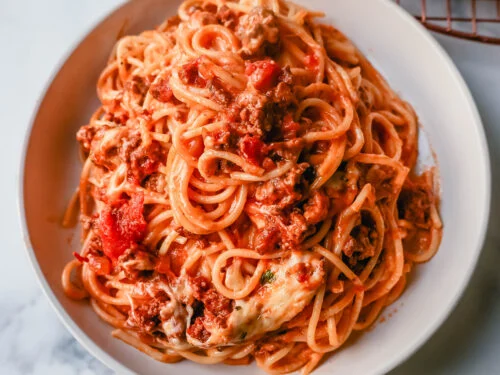

Easy and tasty Spaghetti recipe

This recipe got me through college.
I love making this recipe because it is easy to make and it does not take many ingredients. Also the prep time is pretty quick. The best part is, it is very cost effective to make for the whole family or so you have left overs for days.
Ingredients
- 1lb ground beef (or ground turkey)
- 24oz bottle of pasta sauce
- 1 bag of spaghetti noodles
- 1 tsp salt
- 1 tbl italian seasong
Steps
- Heat a pan over medium hot temperature.
- Add the ground beef (or turkey) to the pan along with the italian seasoning and seasonal
- Cook the meat until brown. Once brown, dump in the pasta sauce and set to a low heat.
- In a large pot, add about 4 cups of water and set to boil. Once boiling, add in the noodles and salt.
- Check the noodle packing to see when they are ready. If you believe they are ready, throw one at a wall. If it sticks, its good to go.
- Drain the noodles of their water and mix them in with the meet and sauce.
- Enjoy the tasty spaghetti!